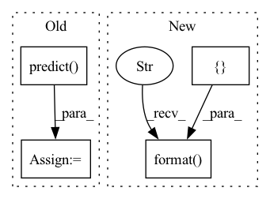

Pattern ID :17861

Before Change
input_ids, attention_mask, segment_ids, valid_masks, label_ids, label_masks = batch
prediction, valid_len = self.predict(batch)
metrics.evaluate(prediction, label_ids, valid_len)
After Change
average="macro")
table = pt.PrettyTable(["{}".format("Evaluation"), "F1", "Precision", "Recall"])
table.add_row(["Label"] + ["{:3.4f}".format(x) for x in [f1, p, r]])
print(table)
// def evaluate(
In pattern: SUPERPATTERN
Frequency: 3
Non-data size: 4
Instances
Fragment ID: 58574029
Project Name: jinzhuoran/cogie
Commit Name: a3df407e630e8b4bbcc3388fd34d0361d70fbdc9
Time: 2022-04-07
Author: 1208314139@qq.com
File Name: cogie/models/ner/w2ner.py
M Class Name: W2NER
N Class Name: W2NER
M Method Name: evaluate(2)
N Method Name: evaluate(3)
M Parent Class: nn.Module
N Parent Class: nn.Module
M File Name: cogie/models/ner/w2ner.py
N File Name: cogie/models/ner/w2ner.py
M Start Line: 271
M End Line: 286
N Start Line: 272
N End Line: 297
'>
Before Change
x = x.numpy()
target = target.numpy()
y_pred = self.model.test_on_batch(x=x, y=target)
y = self.model.predict(x, verbose=0)
loss = y_pred[0]
accuracy = y_pred[1]
correct = tf.equal(tf.argmax(y, 1), tf.cast(target, tf.int64))
// metrics["test_correct"] += tf.reduce_mean(tf.cast(correct, tf.float32))
metrics["test_loss"] += loss
After Change
self.model.set_weights(model_parameters)
def test(self, test_data, device, args):
test_results = []
for batch_idx, (x, target) in enumerate(test_data):
x = x.numpy()
target = target.numpy()
test_results = self.model.test_on_batch(x=x, y=target, reset_metrics=False)
logging.info("test_results = {}".format(test_results))
mlops.log({"Test/Loss": test_results[1], "round": args.round_idx})
mlops.log({"Test/Acc": test_results[0], "round": args.round_idx})
'>
Fragment ID: 58574031
Project Name: fedml-ai/fedml
Commit Name: f0596a0b7173add589515ac589abbadd02f879c9
Time: 2022-08-14
Author: chaoyanghe.com@gmail.com
File Name: python/examples/cross_silo/tf-mqtt_s3_fedavg_mnist_lr_example/tf_model_aggregator.py
M Class Name: TfServerAggregator
N Class Name: TfServerAggregator
M Method Name: test(4)
N Method Name: test(4)
M Parent Class: ServerAggregator
N Parent Class: ServerAggregator
M File Name: python/examples/cross_silo/tf-mqtt_s3_fedavg_mnist_lr_example/tf_model_aggregator.py
N File Name: python/examples/cross_silo/tf-mqtt_s3_fedavg_mnist_lr_example/tf_model_aggregator.py
M Start Line: 29
M End Line: 44
N Start Line: 32
N End Line: 39
'>
Before Change
x = x.numpy()
target = target.numpy()
y_pred = self.model.test_on_batch(x=x, y=target)
y = self.model.predict(x, verbose=0)
loss = y_pred[0]
accuracy = y_pred[1]
correct = tf.equal(tf.argmax(y, 1), tf.cast(target, tf.int64))
After Change
self.model.set_weights(model_parameters)
def test(self, test_data, device, args):
test_results = []
for batch_idx, (x, target) in enumerate(test_data):
x = x.numpy()
target = target.numpy()
test_results = self.model.test_on_batch(x=x, y=target, reset_metrics=False)
logging.info("test_results = {}".format(test_results))
mlops.log({"Test/Loss": test_results[1], "round": args.round_idx})
mlops.log({"Test/Acc": test_results[0], "round": args.round_idx})
'>
Fragment ID: 58574033
Project Name: fedml-ai/fedml
Commit Name: 2f09d098b1ff604f1c408a26250fccf4364fdf1f
Time: 2022-08-14
Author: chaoyanghe.com@gmail.com
File Name: python/examples/cross_silo/tf-mqtt_s3_fedavg_mnist_lr_example/tf_model_aggregator.py
M Class Name: TfServerAggregator
N Class Name: TfServerAggregator
M Method Name: test(4)
N Method Name: test(4)
M Parent Class: ServerAggregator
N Parent Class: ServerAggregator
M File Name: python/examples/cross_silo/tf-mqtt_s3_fedavg_mnist_lr_example/tf_model_aggregator.py
N File Name: python/examples/cross_silo/tf-mqtt_s3_fedavg_mnist_lr_example/tf_model_aggregator.py
M Start Line: 29
M End Line: 44
N Start Line: 32
N End Line: 39